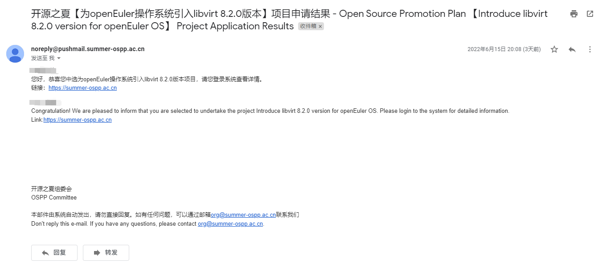

前言
世界上有能够学到技术、提升协作能力、拿丰厚奖金这种“三全其美”的事情吗？在以前我是不相信的，但自从师兄介绍了开源之夏（OSPP）这种活动之后，我第一次知道世界上还有这样一种顶级的活动，鱼和熊掌二者竟可得兼！
简单地介绍下OSPP吧，这是一个由中科院软件研究所“开源软件供应链点亮计划”发起并长期支持的一项暑期开源活动，旨在鼓励在校学生积极参与开源软件的开发维护，促进优秀开源软件社区的蓬勃发展，培养和发掘更多优秀的开发者。官网地址点这里。
申请过程
选定项目
首先肯定是要选择自己想做的项目了，选择的角度可以有很多，每个人的情况不同，根据自己的情况自行选择，以下是我选取项目所考虑到的部分角度：
- 以后想做什么：这肯定是首先要考虑的因素，我想要做一些更偏向于底层的东西，因为偏向于底层的东西更有技术挑战性。克服一个个困难，实现一个个新功能，这样的开发过程很有意思。
- 项目技术与自身的切合度：如果选取一个自己完全陌生的项目，从零开始学习，那么项目做起来的难度肯定是非常大的，所以需要考虑下自己目前所掌握的知识和技术，判断下学习某个项目大概需要的时间，难度是否能够接受。
- 社区情况：社区的情况同样也很重要，如果某个社区非常活跃，导师也非常渴望新鲜血液的加入，那么这个社区肯定是值得加入的。
经过筛选后，我选择了为openEuler操作系统引入libvirt 8.2.0版本这个项目，该项目属于openEuler社区。欧拉社区可以说是国内非常活跃的开源社区了，各种高校活动、比赛、社区活动、开源活动源源不断。社区主要负责开发和维护国产操作系统openEuler，本来就对开发操作系统比较感兴趣的我，与欧拉社区可以算是完美切合了。
简要了解项目内容
根据项目简介和项目产出要求，可以得知该项目的简要工作内容是兼容适配新版本的libvirt，当前openEuler使用的libvirt版本为6.2.0，随着qemu、kvm等包的新功能引入，旧版本的libvirt不能很好地适配这些新功能，libvirt也是时候升级一下了。项目的任务就是适配libvirt 8.2.0版本，将6.2.0版本中添加的、欧拉系统独有的功能特性继续在8.2.0版本中支持。
项目的产出要求如下：
- 基于
openEuler操作系统构建libvirt 8.2.0RPM包 - 将
6.2.0版本中的补丁回合到8.2.0版本中
对于项目的评价：
- 涉及到操作系统的虚拟化技术，我对此比较感兴趣
- 主要内容是分析补丁并适配，工作量不会很大
- 虽然工作量不大，但需要熟悉项目和对应的技术，是个学习新技术的好机会
- 涉及到了打补丁的操作，这也是Linux内核维护常用的方式
- C语言项目经验+1
联系导师
在对项目进行简要了解之后，接下来就是联系导师了，在给导师发的第一封邮件中，我问了几个关于项目的问题。下午5点发的邮件，当天晚上7点多导师就回信了，不得不说导师的回复效率还是很高的，给导师点个赞！导师详细地回答了我提问的几个问题，同时附上了微信号，我也是马上就加了导师的微信。导师在微信中提供了很多相关的学习资料和文档，让我获益匪浅。
当然，导师也是很忙的，我们不能稍微有点小问题就去问导师，导师日常工作是很忙的。学习过程中遇到问题后，首先要尝试问问搜索引擎，要善于运用搜索引擎。实在是找不到相关解答的，再去问导师。
撰写申请书
撰写申请书是项目申请过程中最关键的一环了，前期联系交流的再愉快，最终还是要看申请书的质量的，关于申请书怎么写，OSPP委员会给出了一些指导意见，我们照着指导意见来写就基本没有问题了。参考链接点这里，此外今年中选的项目申请书都公示了，想要看看别人的写的申请书可以去官网项目列表中看。
我的项目书结构如下：
- 标题
- 目录
- 项目简要描述
- 实现方案
- 开发计划
- 未来期望
申请书写完之后就可以发给导师看看，让导师给出一些修改的建议，导师说基本没有问题之后，就可以等着提交到系统中了。
申请结果
6月5日申请书提交截至，6月15日晚公布结果，这10天毫无疑问就是折磨。但好事多磨，公布中选名单之后，邮箱第一时间就收到了邮件，不负所望，正式中选！

接下来就是正式开工前的准备了，跟导师开个线上会议，讨论接下来需要做的工作，确认工作内容后，就可以愉快地开工咯。